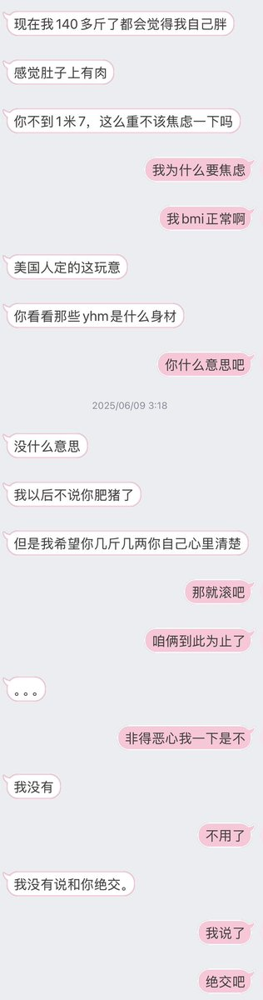

腋窝
@mofuwo8964
但是不管分手之后我再怎么恨我老公也不会发自内心的让他去死，死全家被虐杀被凌迟，但我对我某位前男友就是这种心情！因为这位前男友明明自己也是丑男一枚却很爱嘲讽我，具体事例如去我第一次兴高采烈逛lizlisa的时候跟我说，我是里面最肥发质最差的那个，虽然他事后复盘解释了说他只是嫉妒有人喜欢我但是无人在意他，不过我现在也觉得他很活该无人在意哈哈哈，虽然知道你是精神病但我还是看到你惨就发自内心的感到生命的璀璨和辉煌
（下图的聊天记录是我们分手之后还没完全决裂的时候，哦以及决裂的过程
